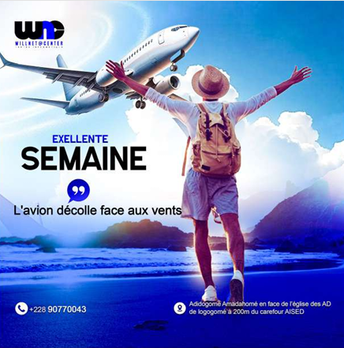
2026
Willnet@Center
Communication visuelle d’un centre informatique : affiches de nouveau mois, de nouvelle semaine, prospectus et visuel du 4e anniversaire.
Voir plus (8 autres réalisations)
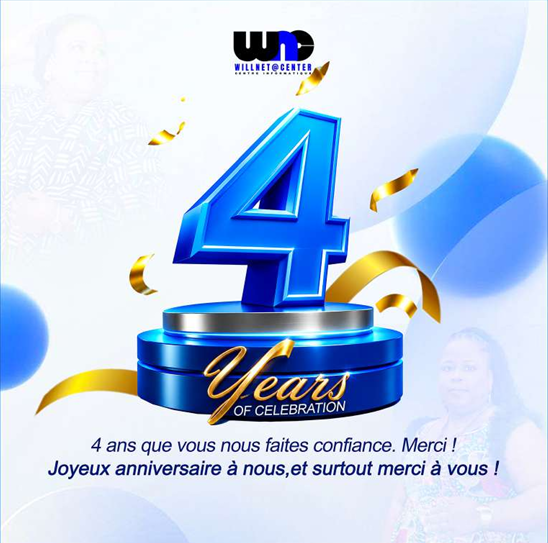


Pour moi, le design ne doit pas seulement être esthétique : il doit être clair, cohérent et fonctionnel.
Chaque projet est un défi technique et une occasion d’apprendre. Mon cursus technique m’aide à aborder la création avec une attention particulière.
Mon ambition : faire du design un métier professionnel, notamment dans le secteur automobile.
Cinq qualités qui guident mon travail de projet en projet.
Planifier, gérer les priorités et respecter les délais tout en livrant un rendu propre.
Une soif d’apprendre qui m’aide à acquérir de nouvelles compétences.
Collaborer avec des profils variés, dans l’écoute, l’humilité et la coopération.
M’adapter aux environnements, méthodes et contraintes, en restant ouvert à l’apprentissage.
Imaginer des concepts originaux grâce à la recherche, l’observation et l’expérimentation.
Des créations adaptées aux réseaux sociaux comme à l’impression.
Des affiches modernes, professionnelles et minimalistes, conçues selon les normes et les besoins du client.
Des logos simples, mémorables et adaptés à chaque domaine d’activité, grâce à la psychologie des formes et des couleurs.
Du logo aux palettes et systèmes typographiques : une identité visuelle forte et facile à reconnaître.
Six projets menés en 2026 pour des entreprises, des églises et des particuliers.

Communication visuelle d’un centre informatique : affiches de nouveau mois, de nouvelle semaine, prospectus et visuel du 4e anniversaire.

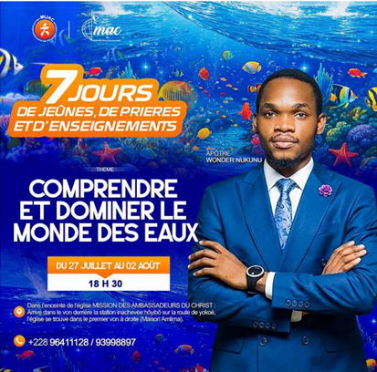
Affiches et flyers pour des programmes, séminaires et cultes dominicaux de deux églises de ma communauté.


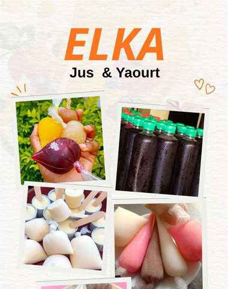
Étiquettes pour pots de yaourts et crèmes, affiche publicitaire et bannières pour la devanture.
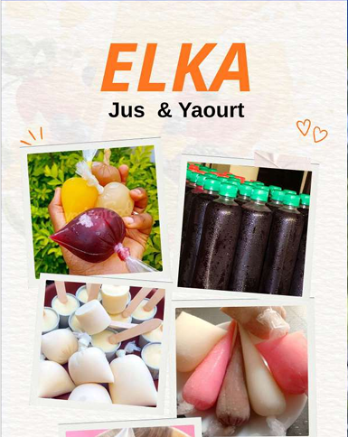
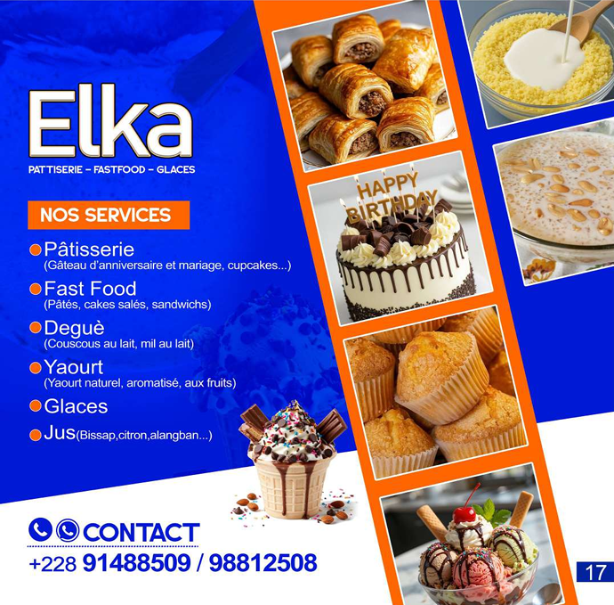


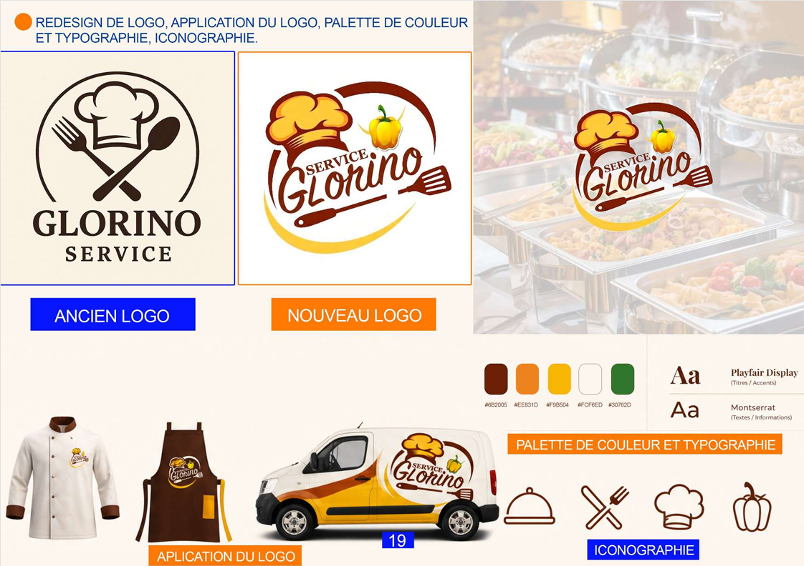
Redesign du logo, palette, typographie, packagings, tabliers et nouveau design des attestations de formation.
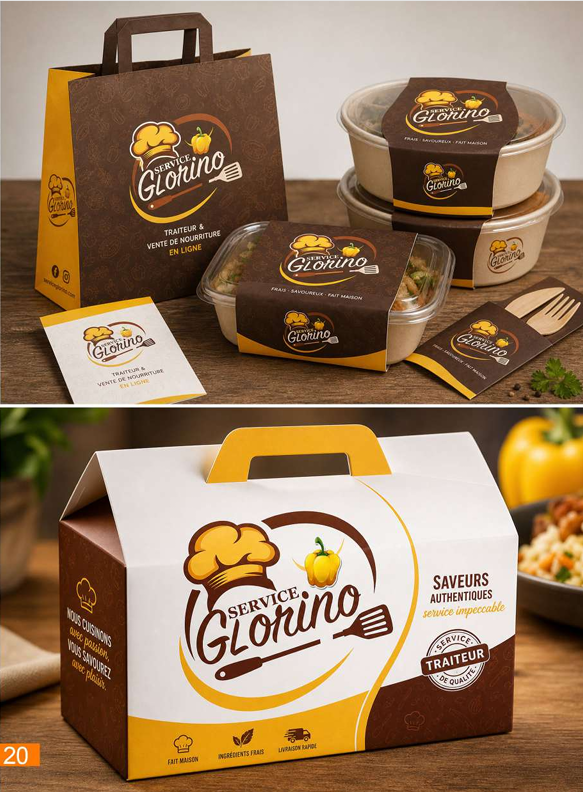
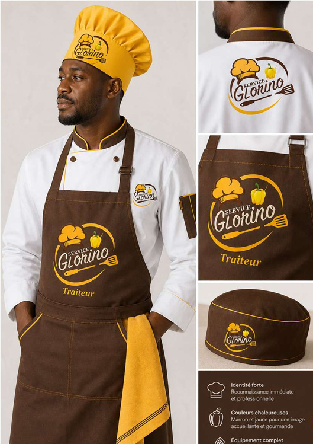
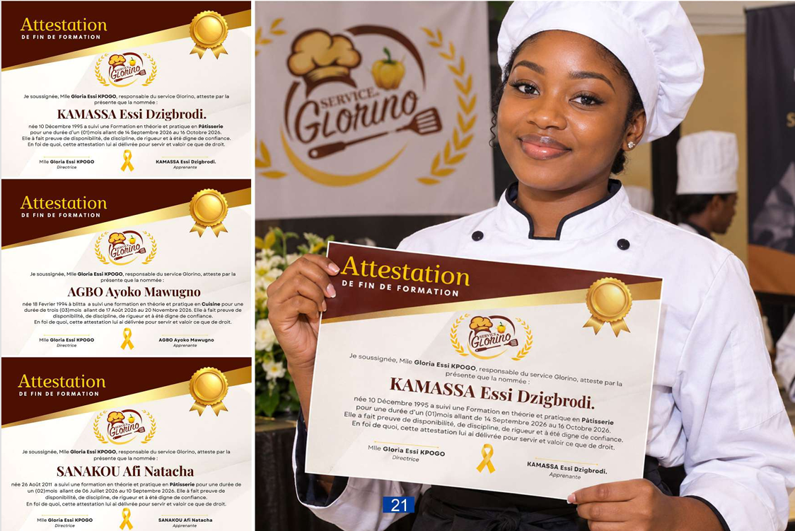

Affiches personnalisées pour célébrer des anniversaires en famille.

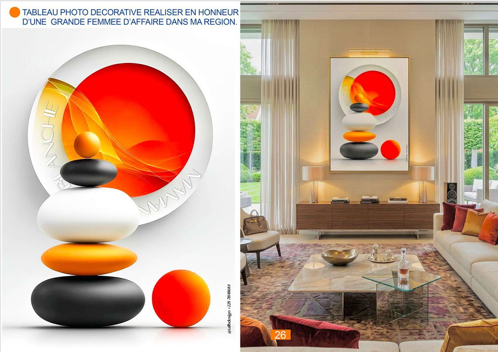
Un petit business lancé en mars : tableaux pour anniversaires, portraits professionnels et décoration, réalisés pour mes voisins, amis et clients.
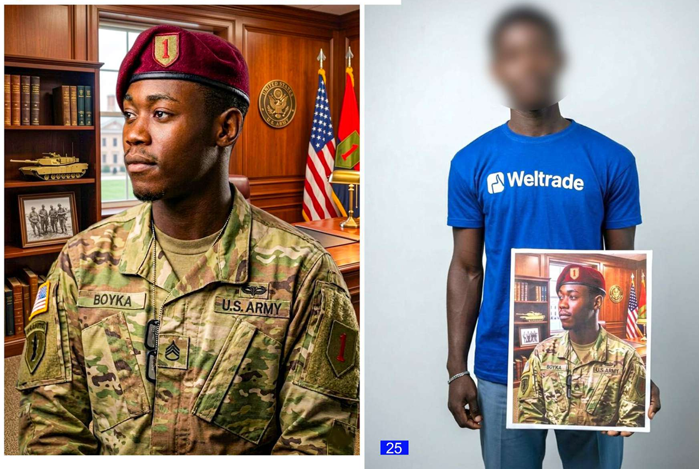
Ce portfolio est une étape dans la construction de mon identité créative. Un projet d’affiche, de logo ou d’identité visuelle ? Écrivez-moi.